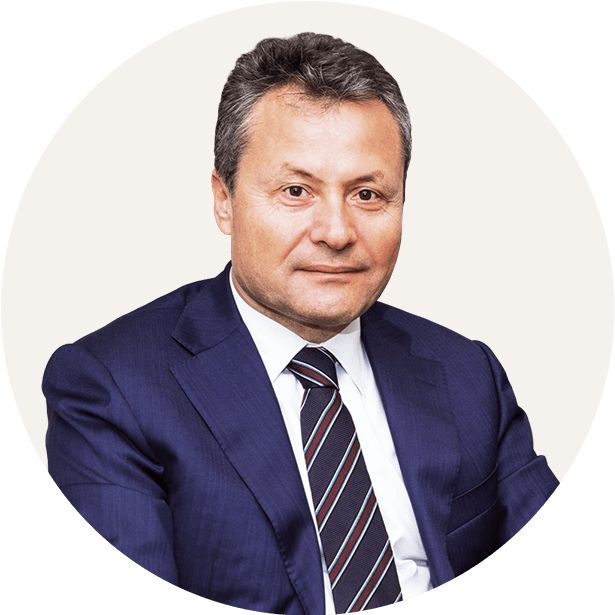

Misyonumuz ve Uzmanlığımız
Ulusal ve uluslararası düzeyde Türkiye'de sağlık turizmi, sağlık yatırım danışmanlığı, hastane yönetimi ve geri ödeme sistemleri konusunda uzmanlıkla danışmanlık hizmeti vermekteyiz.
Misyonumuz, hem bireysel hastalara hem de sağlık kuruluşları ve yatırımıcılara stratejik rehberlik sağlayarak, en yüksek kalitede, en uygun maliyetle hizmetlere ve hedeflerine ulaşmalarına yardımcı olmaktır.
Uzmanlığımız, Türk sağlık sektörü, uluslararası hasta hizmetleri ve kamu-özel sağlık işbirliği modelleri alanındaki güçlü bir temel üzerine inşa edilmiştir.
İletişime Geçin
Sorularınız mı var veya sağlık ihtiyaçlarınızı ya da işbirliği fırsatlarını görüşmeye hazır mısınız? Biz, kişiselleştirilmiş destek ve uzman rehberlik sağlamak için buradayız.
Şimdi İletişime GeçinKurucumuz ile Tanışın

Tahsin Güney
Tahsin Güney, genel sağlık sigortası, sosyal güvenlik sistemleri, özel sağlık yönetimi ve hastane operasyonları alanında 35 yılı aşkın tecrübeye sahip kıdemli bir sağlık yöneticisidir. Türkiye'nin özel sağlık sektöründe tanınmış bir figür olup, sağlık yatırım danışmanlığı, sağlık turizmi stratejisi ve kamu-özel sağlık entegrasyonu konularında kapsamlı deneyime sahiptir.
Sosyal Güvenlik Kurumu'nda (SGK) Başkan Yardımcılığı ve bir süre Vekil Başkan ve Yönetim Kurulu Başkanı olarak görev yapmış, emeklilik modellemesi, sağlık sigortası sistemleri ve sağlık geri ödeme yapılarındaki önemli reformlarda kilit rol oynamıştır.
Özel sektörde ise Türkiye'nin önde gelen özel hastane zincirlerinden Acıbadem Sağlık Grubu'nda üst düzey yöneticilik görevlerinde bulunmuştur. CEO olarak yurtiçi ve yurtdışı hastane operasyonlarını yönetmiş, stratejik büyümeye katılmış ve kamu sektörü ile ilişkileri yürütmüştür.
Profesyonel uzmanlık alanları:
- Sağlık finansmanı ve yatırım danışmanlığı
- Hastane yönetimi ve operasyonel verimlilik
- Hekim ücretlendirme modelleri
- Sağlık politikası ve sosyal güvenlik reformu
- Kamu ve özel sağlık sistemlerinin entegrasyonu
- Özel sağlık sigortası şirketleriyle sözleşme yönetimi
- Sağlık turizmi projesi geliştirme
Tahsin Güney, lisans eğitimini Orta Doğu Teknik Üniversitesi Kamu Yönetimi ve Siyaset Bilimi bölümünde, yüksek lisansını ise City University of London'da Aktüerya Bilimi ve İstatistik alanında tamamladı. Sosyal Güvenlik Kurumu'nda 20 yıl, Acıbadem Sağlık Grubu'nda ise 16 yıl görev yapmıştır.
Halen, özel sağlık sigortası şirketleri, hastaneler, sağlık yatırımcıları ve Türkiye ile yakın bölgelerin sağlık pazarlarına girmek veya bu pazarlarda büyümek isteyen uluslararası acentelere danışmanlık hizmetleri vermektedir.
Temel İlkelerimiz
-
1. Bilgi ve Deneyimi Akıllıca Uygulamak Müşterilerimizin en doğru kararları vermesine yardımcı olmak için kapsamlı uzmanlığımızı ve sektör bilgimizi kullanırız, bunu her zaman stratejik ve etik bir yaklaşımla yaparız.
-
2. Güvenilirlik “Kendin için istediğini başkaları için de iste” ilkesiyle hareket ederek, hem ortak kurumlarımıza hem de hastalarımıza şeffaf, dürüst ve güvenilir hizmetler sunarız.
-
3. Öngörü Sağlık trendlerini ve sektör dinamiklerini yakından takip ederek, bilgi ve deneyime dayalı stratejik öngörüler sunar, böylece müşterilerimizin geleceğe güvenle hazırlanmasını sağlarız.
-
4. Kalite Doğru tesislerle çalışarak ve verimli süreç yönetimiyle, müşterilerimizin en yüksek kalitede hizmeti uygun fiyatlarla almasını sağlarız.